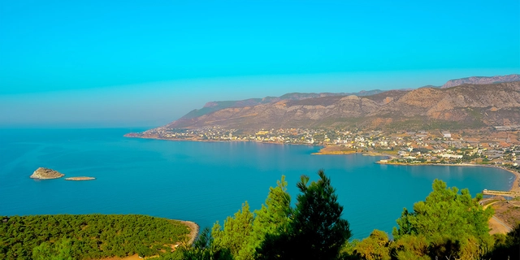

Aydıncık, Mersin ilinin batısında yer alan doğal güzellikleriyle ünlü şirin bir ilçedir. Sahil şeridi ve temiz plajlarıyla dikkat çeker.
Gezilecek Yerler
- Gilindire Mağarası: Sarkıt ve dikitleriyle ünlü bu mağara, Aydıncık'ın en önemli turistik noktalarından biridir.
- Soğuksu Plajı: Serin suları ve doğal güzellikleriyle popüler bir plajdır.
- Aydıncık Limanı: Balıkçı tekneleri ve güzel manzarasıyla ziyaretçilerin ilgisini çeker.
Yöresel Lezzetler
Aydıncık'ın en meşhur lezzetleri arasında taze deniz ürünleri ve zeytinyağlı mezeler yer almaktadır.
Ana Sayfaya Dön